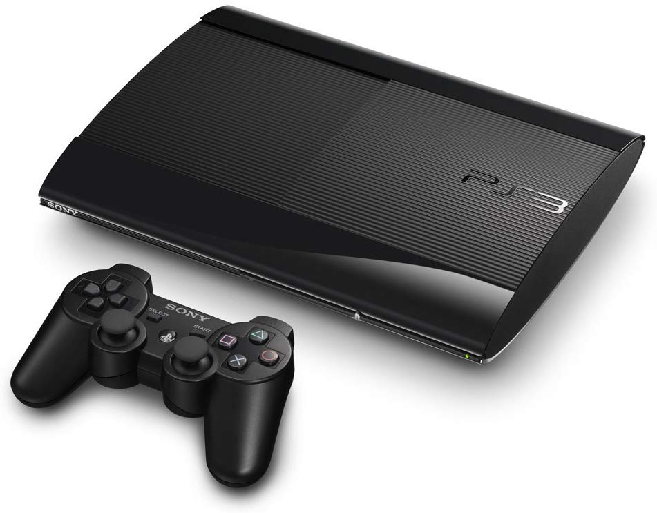
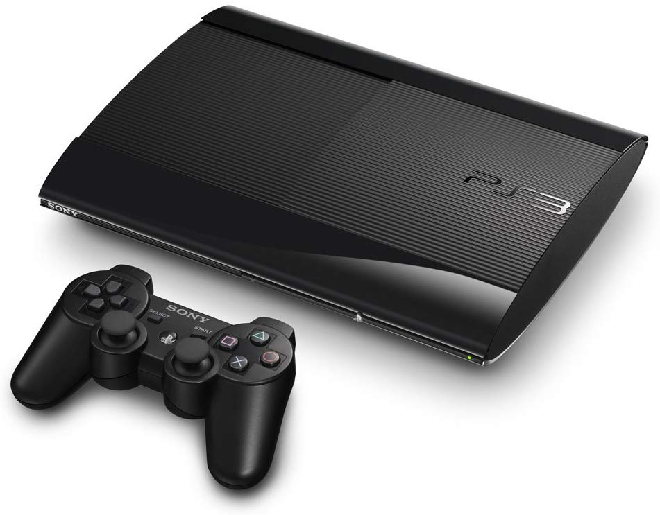

fue lanzada al mercado el 11 de noviembre de 2006 en Japón, el 17 de noviembre de 2006 en Norteamérica y el 23 de marzo de 2007 en Europa y Australia. Dos variantes estaban disponibles en el momento del lanzamiento: un modelo básico con 20 GB de disco duro SATA 2,5" y un modelo profesional con disco duro de 60 GB y varias características adicionales como doble número de puertos USB y retrocompatibilidad con juegos de su antecesora PlayStation 2 y Playstation 1. El modelo de 20 GB no fue comercializado en Europa y Australia, en su lugar se lanzó el modelo de 40 GB, que fue el que se extendió, ya que eliminaba la retrocompatibilidad, pero abarataba los costes. Desde entonces, a todos los modelos se le han hecho varias revisiones en su hardware para la disminución de su costo de producción y su precio de venta.